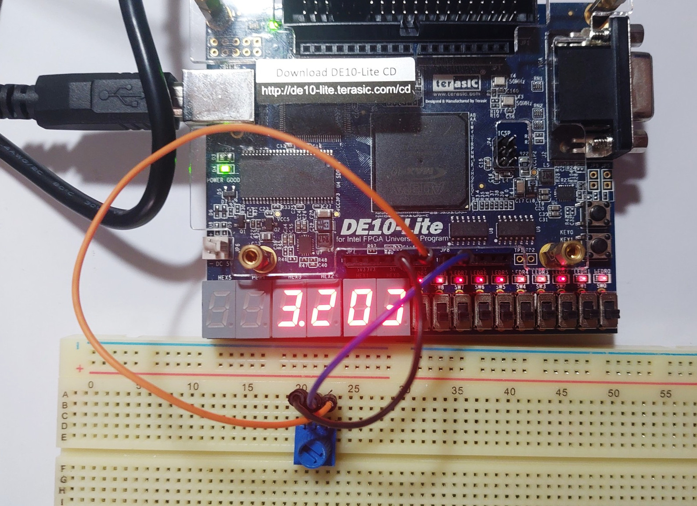

Lab Sheet 6#
This lab sheet contains the following lab activities:
- Lab 1: Basic UART Transmitter
- Lab 2: Using UART IP Cores and Signal Tap Logic Analyzer for FPGA Design
- Lab 3: Using the MAX 10 FPGA On-Chip ADC
Hardware / Software Required#
- Intel DE10-Lite FPGA board (with a USB cable)
- Computer with USB ports + Intel Quartus Prime Lite + VHDL Simulator
- Digital Oscilloscope or Logic Analyzer
- Jumper Wires / Dupont Wires
- Breadboard, potentiometer
Lab 1: Basic UART Transmitter#
Objective#
- Learn how to implement a basic serial transmitter in VHDL.
- Learn how to verify a VHDL design through simulation and hardware measurement using a digital oscilloscope or logic analyzer.
Lab Procedure#
- Write VHDL code that implements a TX-only serial unit (
serial_tx).- Implement an FSM that waits for the
SENDsignal (active-high) and then generates a TXD signal to transmit a data byte for serial communication. During transmission,TX_BUSYis HIGH; otherwise, it is LOW. - Use the
8N1format (8 data bits, no parity bit, one stop bit) with a parameterized baud rate such as9600or115200.
- Implement an FSM that waits for the
- Use the provided VHDL entity for the TX-only module.
- Write VHDL code for the top-level design to test the
serial_txunit.- When pressing a push button, it sends one character (ASCII) from the range
'A'to'Z'.
- When pressing a push button, it sends one character (ASCII) from the range
- Write a VHDL testbench to verify the top-level design. Capture the simulation waveforms for the lab report.
- Implement the design using Quartus Prime and select the DE10-Lite FPGA board as the target device.
- Measure the TXD signal using a digital oscilloscope to check the correctness of the design.
- Measure the bit timing of the TXD data line and capture the waveforms for the lab report.
- Test with two different baud rates, respectively (
9600and115200). - Optional: Use a USB logic analyzer and the PulseView software to capture and analyze the TX serial data.
VHDL Template
entity serial_tx is
generic (
CLK_HZ : integer := 50_000_000;
BAUD_RATE : integer := 115200
);
port (
CLK : in std_logic;
RESET_N : in std_logic;
SEND : in std_logic;
TX_BUSY : out std_logic;
TXD : out std_logic
);
end serial_tx;
Lab 2: Using UART IP Cores and Signal Tap Logic Analyzer for FPGA Design#
Objective:#
- Learn how to use the Serial UART IP cores provided by Quartus Prime.
- Learn how to use the Signal Tap Logic Analyzer to analyze internal signals inside the FPGA device.
Lab Procedure#
- Select either the "Lightweight UART core" (Avalon-MM interface) or the "RS232 UART core" (Streaming interface).
- Write a top-level design in VHDL to instantiate and test the selected UART IP core:
- Implement a 32-bit counter that increments every 100 msec.
- Each time the counter value changes, transmit the corresponding ASCII string (a HEX string terminated with
\r\n) through the UART. Use the 8N1 format and a baud rate of 115200. - Add an active-low input button: when pressed, the counter incrementing is paused; when pressed again, the operation resumes.
- Implement the design using Quartus Prime and select the DE10-Lite FPGA board as the target device.
- Use the Signal Tap Logic Analyzer to monitor or analyze selected signals, such as the 32-bit counter value.
- Connect a USB-to-serial adapter between the FPGA board and the host computer.
- Write simple Python code, or use a terminal program such as Tera Term or Arduino Serial Monitor, to receive data from the FPGA board and verify the correctness of the design.
- Extend the VHDL design to read data bytes from the host computer through the UART RX line.
- If the FPGA receives the following 32-bit sync word (
0xAA 0x55 0x7F 0x7E) from the host, then reset the counter value to 0. - Timeout condition: Each byte of the 32-bit sync word must be received within 1 msec of the previous byte.
If the timeout expires before the next byte arrives, the partial sync word is discarded and the receiver waits for a new sync sequence from the first byte (
0xAA).
- If the FPGA receives the following 32-bit sync word (
- Reimplement the FPGA and test the design using the DE10-Lite FPGA board.
- Send the 32-bit sync word from the host PC (using Python or a terminal program such as RealTerm or CoolTerm that supports raw-byte input mode).
- Verify that the counter resets to zero when the sync word is received correctly within the timeout window.
- Use Signal Tap to monitor internal signals and confirm correct detection of the sync word.
Lab 3: Using the MAX 10 FPGA On-Chip ADC#
Objective#
- Learn how to use the on-chip ADC IP core of the MAX 10 FPGA device.
- Learn how to use the ADC IP core with the Avalon-MM bus interface in an FPGA design.
Lab Procedure#
- Write VHDL code that uses the ADC IP core on the MAX 10 FPGA device:
- Read an analog input channel from the ADC IP core every 100 msec.
- Support two channels (such as
ADC_IN0andADC_IN1), selectable using a slide switch on the FPGA board. - Display the ADC voltage value on the 4-digit 7-segment display of the DE10-Lite FPGA board.
- Show the value with 1 mV resolution (three digits after the decimal point).
- Implement the FPGA design for the DE10-Lite FPGA board.
- Test the FPGA design:
- Use a potentiometer (10kΩ to 20kΩ total resistance) as a voltage divider to provide an analog test input signal to the ADC core.
- Adjust the potentiometer to set different voltage levels between 0V and 5V.
- Measure at least 5 different voltage levels using a digital multimeter (DMM) and compare them with the values displayed on the 7-segment display.
- Use a digital oscilloscope to measure the analog input signal.
- Measure the average voltage (use the DC coupling) and the peak-to-peak voltage (use the AC coupling) while the potentiometer setting remains unchanged.
- Note: We use the AC coupling to make it easier to visually see noise and measure small voltage fluctuations.

Figure: Measuring and displaying the input voltage using the DE10 Lite FPGA board
Post-lab Questions#
- Do you notice significant voltage fluctuations or swings on the 7-segment display?
- Do you think that voltage ripples on the VCC supply to the voltage divider could contribute to fluctuations in the ADC readings?
This work is licensed under a Creative Commons Attribution-ShareAlike 4.0 International License.
Created: 2025-09-23 | Last Updated: 2025-09-23